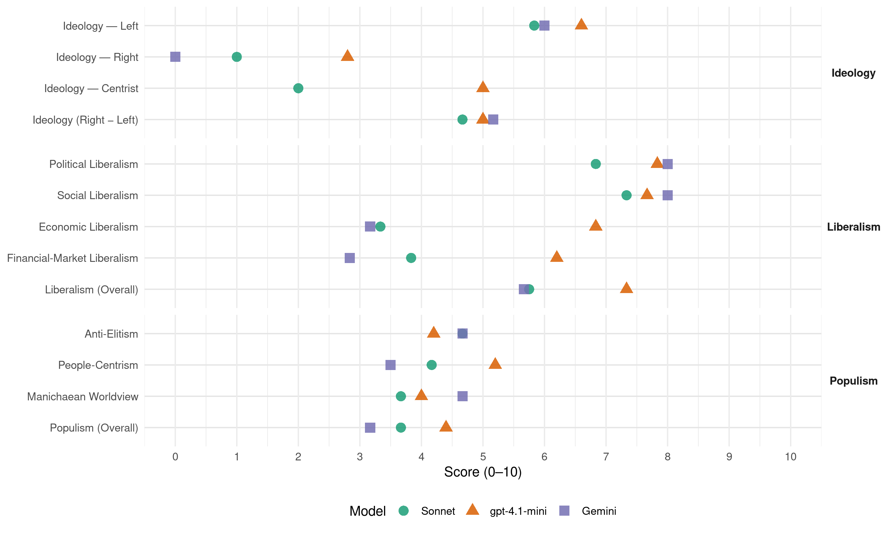

PS (France, 1988)
manifesto_id 31320_198806
Get full text: This site shows derived annotations and short verbatim quotes only. The full manifesto text is © Manifesto Project / WZB — obtain it via manifesto-project.wzb.eu using the manifesto_id above.
Headline scores
| Dimension | Sonnet | gpt-4.1-mini | Gemini |
|---|---|---|---|
| Populism (Overall) | 3.7 | 4.4 | 3.2 |
| Anti-Elitism | 4.7 | 4.2 | 4.7 |
| People-Centrism | 4.2 | 5.2 | 3.5 |
| Manichaean Worldview | 3.7 | 4.0 | 4.7 |
| Ideology (Right − Left) | 4.7 | 5.0 | 5.2 |
| Liberalism (Overall) | 5.8 | 7.3 | 5.7 |
| Political Liberalism | 6.8 | 7.8 | 8.0 |
| Social Liberalism | 7.3 | 7.7 | 8.0 |
| Economic Liberalism | 3.3 | 6.8 | 3.2 |
| Financial-Market Liberalism | 3.8 | 6.2 | 2.8 |
Evidence per dimension
Economic Liberalism
Gemini · score 3.0 · verified · chunk 1
“redonnant sa place à l’action publique au sein de l’économie mixte”
Nouvel équilibre entre l’action de l’État et celle du marché, en redonnant sa place à l’action publique au sein de l’économie mixte dont la France a besoin.
Gemini · score 3.0 · verified · chunk 2
“voie libérale constitue un leurre idéologique”
seule une société mixte peut supporter les mutations liées à la modernisation; la voie libérale constitue un leurre idéologique et dogmatique
Gemini · score 3.0 · verified · chunk 3
“T.F.1. reviendra dans le service public”
Une législation multimédia limitera les concentrations et les abus de position dominante. T.F.1. reviendra dans le service public et la chaîne musicale sera rétablie.
Gemini · score 4.0 · verified · chunk 4
“ne pas accepter la loi exclusive de l’argent”
d’autres modèles de développement social qui n’acceptent pas la loi exclusive de l’argent et du marché.
Gemini · score 3.0 · verified · chunk 5
“les seuls mécanismes du marché étant incapables”
une politique radicalement différente est à promouvoir, les seuls mécanismes du marché étant incapables de répondre à cette exigence que constitue la nécessité
Gemini · score 3.0 · verified · chunk 6
“le laisser-faire pseudo-libéral n’est favorable”
Pas plus qu’à l’intérieur de nos frontières, le laisser-faire pseudo-libéral n’est favorable à la marche vers une moindre inégalité économique entre les nations.
gpt-4.1-mini · score 6.0 · verified · chunk 1
“la France a su préparer l’avenir dans certains domaines, hélas! trop rares.”
En faisant intervenir l’État comme soutien des entreprises privées, en confiant des missions spécifiques à ses entreprises publiques, la France a su préparer l’avenir dans certains domaines, hélas! trop rares.
gpt-4.1-mini · score 7.0 · verified · chunk 2
“la modernisation de l’économie et des rapports sociaux”
Ses maîtres mots sont connus de tous: avancée des libertés et de l’État de droit; respect des individus et progrès de la démocratie; solidarité et justice dans l’action économique et sociale; participation de tous à l’effort nécessaire; modernisation de l’économie et des rapports sociaux; décentralisation; élan donné à la recherche, à la formation et à la culture.
gpt-4.1-mini · score 7.0 · verified · chunk 3
“La recherche d’une plus grande justice fiscale passera par le rétablissement d’un impôt sur les grandes fortunes, par un réaménagement d’un impôt de la fiscalité de l’épargne”
La recherche d’une plus grande justice fiscale passera par le rétablissement d’un impôt sur les grandes fortunes, par un réaménagement d’un impôt de la fiscalité de l’épargne (notamment en taxant plus lourdement les plus-values financières), par une réforme de la fiscalité locale qui devra mieux tenir compte du revenu des contribuables, et par un retour à une action déterminée contre la fraude fiscale.
gpt-4.1-mini · score 6.0 · verified · chunk 4
“l’adaptation de l’école à la vie économique pour former des hommes et des femmes qualifiés”
…l’adaptation vise à répondre aux impératifs économiques, à s’adapter à la société civile. Et l’école elle-même est amenée à s’adapter à la modernisation de la vie économique. Cette adaptation est difficile et très imparfaite car le futur est largement imprévisible; elle doit donc s’accommoder de beaucoup d’erreurs et d’incertitudes; il demeure que l’adaptation de l’école à la vie économique pour former des hommes et des femmes qualifiés est une des nécessités du succès.
gpt-4.1-mini · score 7.0 · verified · chunk 5
“Un impôt sur les fortunes sera rétabli”
Un impôt sur les fortunes sera rétabli. Il est un instrument de réduction des inégalités sociales et favorise l’allocation des capitaux vers les placements productifs.
gpt-4.1-mini · score 8.0 · verified · chunk 6
“libre circulation, concurrence, marchés publics, politique commerciale extérieure”
En 1992, tout ce qui concerne l’espace commercial unifié: libre circulation, concurrence, marchés publics, politique commerciale extérieure, politique régionale devra être intégré.
Sonnet · score 3.0 · verified · chunk 1
“refuser les illusions du tout marché”
Il faut refuser les illusions du <<tout État>> comme celles du <<tout marché>> qui est incapable d’éclairer l’avenir et de construire la solidarité.
Sonnet · score 3.0 · verified · chunk 2
“la voie libérale constitue un leurre idéologique”
seule une société mixte peut supporter les mutations liées à la modernisation; la voie libérale constitue un leurre idéologique et dogmatique, c’est ce qu’enseigne toute l’histoire économique et sociale de la France
Sonnet · score 4.0 · verified · chunk 3
“les contrôles des prix, des changes et du crédit étaient progressivement démantelés”
Parallèlement, les contrôles des prix, des changes et du crédit étaient progressivement démantelés. Elle n’avait pas pour autant achevé sa modernisation
Sonnet · score 5.0 · mixed · chunk 4
“sous prétexte de libéralisme les aides incitatives”
La droite, en deux ans, en réduisant la part de l’effort civil de recherche, en remettant en cause sous prétexte de libéralisme les aides incitatives et en stoppant les recrutements au C.N.R.S.
Sonnet · score 4.0 · mixed · chunk 5
“les seuls mécanismes du marché étant incapables”
il est clair qu’une politique radicalement différente est à promouvoir, les seuls mécanismes du marché étant incapables de répondre à cette exigence
Sonnet · score 4.0 · mixed · chunk 6
“L’imposture du libéralisme”
Chapitre 2: L’imposture du libéralisme. Le libéralisme comme RENONCEMENT à l’action et à la connaissance. Le libéralisme-paravent. Les pièges du libéralisme
Financial-Market Liberalism
Gemini · score 2.0 · verified · chunk 1
“les bouleversements récents des marchés financiers ont montré combien le système”
les déséquilibres s’accentuent. Les bouleversements récents des marchés financiers ont montré combien le système dans lequel nous vivons est fragile.
Gemini · score 2.0 · verified · chunk 2
“imposition des plus-values financières des entreprises”
entre l’investissement et les placements financiers, l’imposition des plus-values financières des entreprises sera relevée.
Gemini · score 3.0 · verified · chunk 3
“taxant plus lourdement les plus-values financières”
La recherche d’une plus grande justice fiscale passera par le rétablissement d’un impôt sur les grandes fortunes, par un réaménagement d’un impôt de la fiscalité de l’épargne (notamment en taxant plus lourdement les plus-values financières)
Gemini · score 3.0 · verified · chunk 4
“relèvement du taux de l’imposition des plus-values”
Un relèvement du taux de l’imposition des plus-values mobilières est donc parfaitement
Gemini · score 3.0 · verified · chunk 5
“un relèvement du taux de l’imposition des plus-values mobilières”
qui transforment les revenus du capital en plus-values (S.I.C.A.V., Fonds commun de placement..). Sur le plan social, cette anomalie conduit à une accentuation des inégalités et à une concentration des richesses. Un relèvement du taux de l’imposition des plus-values mobilières est donc parfaitement justifié.
Gemini · score 4.0 · verified · chunk 6
“rôle privé de l’ECU devra être élargi”
En second lieu, le rôle privé de l’ECU devra être élargi notamment au niveau du crédit et des marchés financiers, celui-ci prenant à terme le rôle de monnaie de règlement.
gpt-4.1-mini · score 3.0 · verified · chunk 1
“le capitalisme populaire de Chirac et Balladur a constitué la plus grande mystification”
En France, le plus pur joyau du libéralisme devait être le développement du <<capitalisme populaire>>. Présenté comme une solution miraculeuse, susceptible de contribuer à le modernisation de la France, ce capitalisme populaire de Chirac et Balladur a constitué la plus grande mystification à laquelle un gouvernement se soit jamais livré.
gpt-4.1-mini · score 6.0 · verified · chunk 2
“les privatisations en fournissent une parfaite illustration”
Le libéralisme peut aussi servir de paravent aux appétits de certains. Les privatisations en fournissent une parfaite illustration. Sur ce sujet, il n’est pas plus dirigiste que E. Balladur. La composition des fameux <<noyaux durs»,
gpt-4.1-mini · score 7.0 · verified · chunk 3
“La réforme des marchés financiers réalisée par les socialistes a permis d’introduire davantage de transparence et de concurrence dans le fonctionnement des marchés, d’y favoriser l’innovation et d’alléger la tutelle de l’État.”
La réforme des marchés financiers réalisée par les socialistes a permis d’introduire davantage de transparence et de concurrence dans le fonctionnement des marchés, d’y favoriser l’innovation et d’alléger la tutelle de l’État. Les privilèges et rentes dont le coût est finalement supporté par les entreprises et les particuliers ont été réduits, porté supprimés. Si l’essentiel a été réalisé, il importe de consolider l’acquis et de ne pas laisser s’installer des pratiques équivalant à un retour en arrière. L’information des épargnants devra être améliorée. Les pouvoirs de la C.O.B. seront également renforcés et son indépendance vis-à-vis du Ministère des Finances mieux assurée.
gpt-4.1-mini · score 7.0 · verified · chunk 5
“lutte contre la fraude fiscale doit comprendre un renforcement des moyens”
La lutte contre la fraude fiscale doit comprendre à la fois un renforcement des moyens et une extension des garanties des contribuables.
gpt-4.1-mini · score 8.0 · verified · chunk 6
“le rôle privé de l’ECU devra être élargi notamment au niveau du crédit et des marchés financiers”
En second lieu, le rôle privé de l’ECU devra être élargi notamment au niveau du crédit et des marchés financiers, celui-ci prenant à terme le rôle de monnaie de règlement.
Sonnet · score 3.0 · verified · chunk 1
“la plus grande concentration de pouvoir industriel et financier”
le libéralisme a construit un paravent qui masque la plus grande concentration de pouvoir industriel et financier que notre pays ait connue.
Sonnet · score 3.0 · verified · chunk 2
“la plus grande concentration de pouvoir industriel et financier”
le libéralisme a construit un paravent qui masque la plus grande concentration de pouvoir industriel et financier que notre pays ait connue
Sonnet · score 5.0 · verified · chunk 3
“La réforme des marchés financiers réalisée par les socialistes”
La réforme des marchés financiers réalisée par les socialistes a permis d’introduire davantage de transparence et de concurrence dans le fonctionnement des marchés, d’y favoriser l’innovation et d’alléger la tutelle de l’État.
Sonnet · score 4.0 · verified · chunk 4
“imposition du capital joue un rôle de dissuasion”
l’imposition du capital joue un rôle de dissuasion des attitudes de rentier spéculateur et favorise l’allocation des capitaux vers les placements productifs
Sonnet · score 3.0 · verified · chunk 5
“imposition du capital joue un rôle de dissuasion”
l’imposition du capital joue un rôle de dissuasion des attitudes de rentier spéculateur et favor… allocation des capitaux vers les placements productifs
Sonnet · score 5.0 · verified · chunk 6
“rôle privé de l’ECU devra être élargi notamment au niveau du crédit et des marchés financiers”
En second lieu, le rôle privé de l’ECU devra être élargi notamment au niveau du crédit et des marchés financiers, celui-ci prenant à terme le rôle de monnaie de règlement
Political Liberalism
Gemini · score 8.0 · verified · chunk 1
“l’approfondissement de la démocratie, l’affirmation de la laïcité”
l’extension des libertés, la transformation des rapports sociaux, l’approfondissement de la démocratie, l’affirmation de la laïcité qui est la tolérance
Gemini · score 8.0 · verified · chunk 2
“avancée des libertés et de l’État de droit”
maîtres mots sont connus de tous: avancée des libertés et de l’État de droit; respect des individus et progrès
Gemini · score 8.0 · verified · chunk 3
“Parlement doit retrouver plus d’initiative”
Dans l’équilibre des pouvoirs publics, le Parlement doit retrouver plus d’initiative, notamment par l’extension de son pouvoir de proposition
Gemini · score 8.0 · verified · chunk 4
“vigilant devant les risques de restriction des droits”
vigilant devant les risques de restriction des droits de l’homme et des libertés
Gemini · score 8.0 · verified · chunk 5
“l’indépendance de la magistrature soit renforcée”
les socialistes veilleront à ce que l’indépendance de la magistrature soit renforcée, afin que les magistrats puissent pleinement remplir leur mission
Gemini · score 8.0 · verified · chunk 6
“plus de démocratie, de justice sociale et de solidarité”
Ainsi, les gouvernements de gauche, soucieux de traduire dans les faits nos engagements de 1981 pour plus de démocratie, de justice sociale et de solidarité, ont permis l’élection au suffrage universel
gpt-4.1-mini · score 7.0 · verified · chunk 1
“la démocratie demande du temps. Si le gouvernement ne veut pas piloter seul l’évolution”
La démocratie demande du temps. Si le gouvernement ne veut pas piloter seul l’évolution de LA société, s’il veut en débattre avec la société civile dans son ensemble, avec les syndicats, les associations ou toute structure représentative d’un ensemble de citoyens, il lui faut du temps.
gpt-4.1-mini · score 8.0 · verified · chunk 2
“avancée des libertés et de l’État de droit”
Ses maîtres mots sont connus de tous: avancée des libertés et de l’État de droit; respect des individus et progrès de la démocratie; solidarité et justice dans l’action économique et sociale; participation de tous à l’effort nécessaire; modernisation de l’économie et des rapports sociaux; décentralisation; élan donné à la recherche, à la formation et à la culture.
gpt-4.1-mini · score 8.0 · verified · chunk 3
“Dans l’équilibre des pouvoirs publics, le Parlement doit retrouver plus d’initiative, notamment par l’extension de son pouvoir de proposition et d’investigation grâce à la mise en place de commissions d’enquête dotées de pouvoirs juridictionnels.”
LA DÉMOCRATIE PARTOUT Les services publics doivent mieux satisfaire les usagers. Cela suppose un effort soutenu de simplification des procédures. Dans l’équilibre des pouvoirs publics, le Parlement doit retrouver plus d’initiative, notamment par l’extension de son pouvoir de proposition et d’investigation grâce à la mise en place de commissions d’enquête dotées de pouvoirs juridictionnels. Dans le domaine des médias, une autorité véritablement indépendante remplacera la C.N.C.L. complètement discréditée.
gpt-4.1-mini · score 7.0 · verified · chunk 4
“la démocratie, les rapports Nord-Sud”
…une vision à long terme des enjeux économiques, sociaux, mais aussi internationaux (l’Europe, les rapports Nord-Sud) des années à venir. Les mutations technologiques en cours l’imposent, elles imposent également une réelle concertation avec tous les acteurs. C’est dans la constance de l’effort, dans la solidité et la durée des institutions que réside la force d’une politique.
gpt-4.1-mini · score 8.0 · verified · chunk 5
“la démocratie, les droits, les élections, les tribunaux”
Il n’est de vraie justice qu’égale pour tous, indépendante et respectée. La liberté de décision des magistrats et le respect des droits des justiciables sont essentiels.
gpt-4.1-mini · score 9.0 · verified · chunk 6
“plus de démocratie, de justice sociale et de solidarité”
les gouvernements de gauche, soucieux de traduire dans les faits nos engagements de 1981 pour plus de démocratie, de justice sociale et de solidarité, ont permis l’élection au suffrage universel des membres du Conseil Supérieur des Français de l’Étranger (C.S.F.E.)
Sonnet · score 6.0 · verified · chunk 1
“la démocratie demande du temps”
La démocratie demande du temps. Si le gouvernement ne veut pas piloter seul l’évolution de la société, s’il veut en débattre avec la société civile dans son ensemble
Sonnet · score 7.0 · verified · chunk 2
“avancée des libertés et de l’État de droit”
Ses maîtres mots sont connus de tous: avancée des libertés et de l’État de droit; respect des individus et progrès de la démocratie; solidarité et justice dans l’action économique et sociale
Sonnet · score 7.0 · verified · chunk 3
“le Parlement doit retrouver plus d’initiative”
Dans l’équilibre des pouvoirs publics, le Parlement doit retrouver plus d’initiative, notamment par l’extension de son pouvoir de proposition et d’investigation grâce à la mise en place de commissions d’enquête
Sonnet · score 7.0 · verified · chunk 4
“dans une démocratie, il faut aussi que les citoyens”
Mais, dans une démocratie, il faut aussi que les citoyens maîtrisent l’évolution de la société dans laquelle ils vivent; les enjeux culturels sont décisifs.
Sonnet · score 7.0 · verified · chunk 5
“garantir la force de contre-pouvoirs”
Il est aujourd’hui nécessaire de garantir la force de «contre-pouvoirs». Le parlement doit retrouver plus d’initiative, par la limitation du rôle de l’article 49.3
Sonnet · score 7.0 · verified · chunk 6
“plus de démocratie, de justice sociale et de solidarité”
les gouvernements de gauche, soucieux de traduire dans les faits nos engagements de 1981 pour plus de démocratie, de justice sociale et de solidarité, ont permis l’élection au suffrage universel
Liberalism (Overall)
Gemini · score 5.0 · verified · chunk 1
“l’idée qui habite, qui parcourt notre projet se nomme liberté”
PROPOSITIONS POUR LA FRANCE INTRODUCTION LE COMBAT DES SOCIALISTES EST CELUI DE LA LIBERTÉ L’idée qui habite, qui parcourt notre projet se nomme liberté.
Gemini · score 5.0 · verified · chunk 2
“avancée des libertés et de l’État de droit”
maîtres mots sont connus de tous: avancée des libertés et de l’État de droit; respect des individus et progrès
Gemini · score 6.0 · verified · chunk 3
“Parlement doit retrouver plus d’initiative”
Dans l’équilibre des pouvoirs publics, le Parlement doit retrouver plus d’initiative, notamment par l’extension de son pouvoir de proposition
Gemini · score 6.0 · verified · chunk 4
“vigilant devant les risques de restriction des droits”
vigilant devant les risques de restriction des droits de l’homme et des libertés
Gemini · score 6.0 · verified · chunk 5
“l’indépendance de la magistrature soit renforcée”
les socialistes veilleront à ce que l’indépendance de la magistrature soit renforcée, afin que les magistrats puissent pleinement remplir leur mission
Gemini · score 6.0 · verified · chunk 6
“plus de démocratie, de justice sociale et de solidarité”
Ainsi, les gouvernements de gauche, soucieux de traduire dans les faits nos engagements de 1981 pour plus de démocratie, de justice sociale et de solidarité, ont permis l’élection au suffrage universel
gpt-4.1-mini · score 6.0 · verified · chunk 1
“la France a su préparer l’avenir dans certains domaines, hélas! trop rares.”
En faisant intervenir l’État comme soutien des entreprises privées, en confiant des missions spécifiques à ses entreprises publiques, la France a su préparer l’avenir dans certains domaines, hélas! trop rares.
gpt-4.1-mini · score 7.0 · verified · chunk 2
“la modernisation de l’économie et des rapports sociaux”
Ses maîtres mots sont connus de tous: avancée des libertés et de l’État de droit; respect des individus et progrès de la démocratie; solidarité et justice dans l’action économique et sociale; participation de tous à l’effort nécessaire; modernisation de l’économie et des rapports sociaux; décentralisation; élan donné à la recherche, à la formation et à la culture.
gpt-4.1-mini · score 8.0 · verified · chunk 3
“La réforme des marchés financiers réalisée par les socialistes a permis d’introduire davantage de transparence et de concurrence dans le fonctionnement des marchés, d’y favoriser l’innovation et d’alléger la tutelle de l’État.”
La réforme des marchés financiers réalisée par les socialistes a permis d’introduire davantage de transparence et de concurrence dans le fonctionnement des marchés, d’y favoriser l’innovation et d’alléger la tutelle de l’État. Les privilèges et rentes dont le coût est finalement supporté par les entreprises et les particuliers ont été réduits, porté supprimés. Si l’essentiel a été réalisé, il importe de consolider l’acquis et de ne pas laisser s’installer des pratiques équivalant à un retour en arrière. L’information des épargnants devra être améliorée. Les pouvoirs de la C.O.B. seront également renforcés et son indépendance vis-à-vis du Ministère des Finances mieux assurée.
gpt-4.1-mini · score 7.0 · verified · chunk 4
“la démocratie, les rapports Nord-Sud”
…une vision à long terme des enjeux économiques, sociaux, mais aussi internationaux (l’Europe, les rapports Nord-Sud) des années à venir. Les mutations technologiques en cours l’imposent, elles imposent également une réelle concertation avec tous les acteurs. C’est dans la constance de l’effort, dans la solidité et la durée des institutions que réside la force d’une politique.
gpt-4.1-mini · score 8.0 · verified · chunk 5
“Un impôt sur les fortunes sera rétabli”
Un impôt sur les fortunes sera rétabli. La lutte contre la fraude fiscale doit comprendre un renforcement des moyens et une extension des garanties des contribuables.
gpt-4.1-mini · score 8.0 · verified · chunk 6
“plus de démocratie, de justice sociale et de solidarité”
les gouvernements de gauche, soucieux de traduire dans les faits nos engagements de 1981 pour plus de démocratie, de justice sociale et de solidarité, ont permis l’élection au suffrage universel des membres du Conseil Supérieur des Français de l’Étranger (C.S.F.E.)
Sonnet · score 5.0 · mixed · chunk 1
“l’approfondissement de la démocratie, l’affirmation de la laïcité”
l’extension des libertés, la transformation des rapports sociaux, l’approfondissement de la démocratie, l’affirmation de la laïcité qui est la tolérance et le respect des croyances de chacun
Sonnet · score 5.0 · mixed · chunk 2
“avancée des libertés et de l’État de droit”
Ses maîtres mots sont connus de tous: avancée des libertés et de l’État de droit; respect des individus et progrès de la démocratie
Sonnet · score 6.0 · verified · chunk 3
“davantage de transparence et de concurrence dans le fonctionnement des marchés”
La réforme des marchés financiers réalisée par les socialistes a permis d’introduire davantage de transparence et de concurrence dans le fonctionnement des marchés, d’y favoriser l’innovation
Sonnet · score 6.0 · verified · chunk 4
“dans une démocratie, il faut aussi que les citoyens”
Mais, dans une démocratie, il faut aussi que les citoyens maîtrisent l’évolution de la société dans laquelle ils vivent; les enjeux culturels sont décisifs.
Sonnet · score 5.0 · verified · chunk 5
“garantir la force de contre-pouvoirs”
Il est aujourd’hui nécessaire de garantir la force de «contre-pouvoirs». Le parlement doit retrouver plus d’initiative
Sonnet · score 6.0 · verified · chunk 6
“droits politiques des Français qui demeurent en métropole”
les Français qui vivent à l’étranger puissent continuer à bénéficier de l’accès à l’enseignement et à la formation, de la protection sociale et des droits politiques des Français
Anti-Elitism
Gemini · score 6.0 · verified · chunk 1
“donner une grande part du pouvoir économique à quelques groupes financiers amis”
motivation des privatisations qui est de donner une grande part du pouvoir économique à quelques groupes financiers amis du R.P.R.
Gemini · score 3.0 · verified · chunk 2
“quelques groupes amis du pouvoir”
la distribution du pouvoir industriel et financier à quelques groupes amis du pouvoir. Gramsci ne définissait-il pas
Gemini · score 6.0 · verified · chunk 3
“noyaux durs>> sera revue en utilisant”
les opérations de privatisation ont regroupé entre quelques mains proches du pouvoir politique une large part du pouvoir économique. A cette occasion, a eu lieu une concentration sans précédent dans l’histoire économique française. Pour mettre fin à cette situation qui vise à priver le pouvoir politique démocratiquement élu d’une partie de sa liberté de manœuvre, la composition des <<noyaux durs>> sera revue en utilisant toutes les méthodes possibles
Gemini · score 6.0 · verified · chunk 4
“contester la légitimité de l’ordre établi”
L’éducation permet de contester la légitimité de l’ordre établi, de revendiquer le droit
Gemini · score 4.0 · verified · chunk 5
“la droite au gouvernement pratique une politique clientéliste”
le recul depuis mars 1986 est évident; la droite au gouvernement pratique une politique clientéliste, inévitablement porteuse de régression de la concertation
Gemini · score 3.0 · verified · chunk 6
“la droite au gouvernement pratique une politique clientéliste”
Sur tous ces points, le recul depuis mars 1986 est évident; la droite au gouvernement pratique une politique clientéliste, inévitablement porteuse de régression de la concertation
gpt-4.1-mini · score 3.0 · verified · chunk 1
“la droite réserve aux faibles ses coups. Les privilèges fondent sa philosophie.”
Aujourd’hui, notre société reste injuste et inégalitaire. Docile aux riches et aux puissants, la droite réserve aux faibles ses coups. Les privilèges fondent sa philosophie.
gpt-4.1-mini · score 7.0 · verified · chunk 2
“la droite cherche à esquiver le débat sur le fond”
En assénant ses certitudes de façon simpliste et brutale, la droite cherche à esquiver le débat sur le fond. Quand le fond n’intéresse plus, quand seul le discours vaut, l’extrémisme du langage favorise l’extrémisme tout court.
gpt-4.1-mini · score 6.0 · verified · chunk 3
“Les opérations de privatisation ont regroupé entre quelques mains proches du pouvoir politique une large part du pouvoir économique.”
Quand la tourmente financière montre la fragilité des structures que l’on croyait les plus solides, quand la protection de ses propres actions devient la préoccupation principale des entreprises, on apprécie la sérénité qu’apporte le statut d’entreprise publique et on mesure combien l’énergie perdue à des opérations financières aurait mieux été utilisée à préparer l’avenir. Les opérations de privatisation ont regroupé entre quelques mains proches du pouvoir politique une large part du pouvoir économique. A cette occasion, a eu lieu une concentration sans précédent dans l’histoire économique française. Pour mettre fin à cette situation qui vise à priver le pouvoir politique démocratiquement élu d’une partie de sa liberté de manœuvre, la composition des «noyaux durs» sera revue en utilisant toutes les méthodes possibles: le rachat de gré à gré, le rachat sur les marchés ou la loi.
gpt-4.1-mini · score 2.0 · verified · chunk 4
“la revendication de l’accès au savoir pour tous”
…revendiquent le pouvoir que donne le savoir sur le monde. Cette double logique doit être comprise et voulue. Il faut réaliser un équilibre entre formation générale et formation à finalité professionnelle. Il ne s’agit pas de choisir entre les deux, il faut tenir les deux ensemble. Dans ce domaine, comme dans d’autres, des progrès ont été accomplis. La croissance du niveau moyen d’éducation est forte: le nombre d’élèves sortant du système scolaire sans qualification ou diplôme est en diminution constante. Mais nombre de qualifications ne répondent plus aux besoins de société. Bien plus, dans les cas extrêmes, la sortie de l’école correspond tout juste à l’acquisition de la lecture et de l’écriture. L’illettrisme et l’analphabétisme ne sont, hélas, pas rares. A l’évidence, la responsabilité de cette situation n’incombe pas seulement à l’école - même si la rapidité de son adaptation au monde extérieur est insuffisante - mais à la société tout entière qui donne le spectacle de réussites faciles alors que la génération qui a vingt ans aujourd’hui doit se battre plus que ses aînés pour assurer son insertion.
gpt-4.1-mini · score 3.0 · verified · chunk 5
“la droite au pouvoir l’a supprimé”
Jean Jaurès, Léon Blum puis François Mitterrand en ont propose la création. La droite au pouvoir l’a supprimé. Un impôt sur les fortunes sera rétabli.
Sonnet · score 6.0 · verified · chunk 1
“Docile aux riches et aux puissants, la droite réserve aux faibles ses coups”
Notre société reste injuste et inégalitaire. Docile aux riches et aux puissants, la droite réserve aux faibles ses coups. Les privilèges fondent sa philosophie.
Sonnet · score 6.0 · verified · chunk 2
“la droite revancharde, réactionnaire, parfois cynique”
c’est la droite que ceux qui nous ont précédés ont toujours combattue; c’est la droite revancharde, réactionnaire, parfois cynique; c’est la droite qui organise la confiscation du pouvoir
Sonnet · score 4.0 · verified · chunk 3
“Les opérations de privatisation ont regroupé entre quelques mains proches du pouvoir politique”
une concentration sans précédent dans l’histoire économique française. Pour mettre fin à cette situation qui vise à priver le pouvoir politique démocratiquement élu d’une partie de sa liberté de manœuvre
Sonnet · score 4.0 · verified · chunk 4
“la droite a choisi la restriction”
a succédé une attitude de renoncement. La droite, comme durant les années 70 où elle a privilégié les profits immédiats alors même que la crise économique se développait, a choisi la restriction et a privilégié le court terme
Sonnet · score 4.0 · verified · chunk 5
“exploitation politicienne de la droite”
les socialistes continueront cependant, aujourd’hui comme demain, à traiter l’insécurité plutôt que de l’exploiter… l’exploitation politicienne de la droite a injustement, mais efficacement, camouflé leurs résultats
Sonnet · score 4.0 · verified · chunk 6
“la droite au gouvernement pratique une politique clientéliste”
Sur tous ces points, le recul depuis mars 1986 est évident; la droite au gouvernement pratique une politique clientéliste, inévitablement porteuse de régression
Ideology — Centrist
gpt-4.1-mini · score 4.0 · verified · chunk 1
“le Parti socialiste appelle les forces vives du pays et d’abord le monde du travail”
Le Parti socialiste appelle les forces vives du pays et d’abord le monde du travail à soutenir ces propositions. En votant pour le candidat soutenu par le Parti socialiste aux élections présidentielles, les Français voteront pour un juste partage de l’effort et des fruits de l’effort.
gpt-4.1-mini · score 7.0 · verified · chunk 2
“la droite et l’extrême droite ont des … communs”
Il est vrai que la droite et l’extrême droite ont des … communs. Si J.-M. Le Pen pousse plus loin quo les dirigeants de l’U.D.F. et du R.P.R. la …ciation de boucs émissaires face aux difficultés de la vie en société - immigrés, malades du S.I.D.A. -,
gpt-4.1-mini · score 6.0 · verified · chunk 3
“La démocratie partout Les services publics doivent mieux satisfaire les usagers. Cela suppose un effort soutenu de simplification des procédures.”
LA DÉMOCRATIE PARTOUT Les services publics doivent mieux satisfaire les usagers. Cela suppose un effort soutenu de simplification des procédures. Dans l’équilibre des pouvoirs publics, le Parlement doit retrouver plus d’initiative, notamment par l’extension de son pouvoir de proposition et d’investigation grâce à la mise en place de commissions d’enquête dotées de pouvoirs juridictionnels.
gpt-4.1-mini · score 3.0 · verified · chunk 4
“la revendication de l’accès au savoir pour tous”
…revendiquent le pouvoir que donne le savoir sur le monde. Cette double logique doit être comprise et voulue. Il faut réaliser un équilibre entre formation générale et formation à finalité professionnelle. Il ne s’agit pas de choisir entre les deux, il faut tenir les deux ensemble. Dans ce domaine, comme dans d’autres, des progrès ont été accomplis.
gpt-4.1-mini · score 5.0 · verified · chunk 5
“l’État y incitera, comme il l’a fait entre 1981 et 1986”
Le racisme sera combattu sur le terrain. L’État y incitera, comme il l’a fait entre 1981 et 1986, mais tous les acteurs doivent être mobilisés: collectivités locales, entreprises, associations de jeunes et d’immigrés.
Sonnet · score 2.0 · verified · chunk 1
“il n’y a pas d’autre ligne de partage”
Conduire ou subir le changement, il n’y a pas d’autre ligne de partage, pas d’autre choix politique vraiment décisif pour les années qui viennent que celui-là.
Sonnet · score 2.0 · verified · chunk 2
“un message qui s’adresse à tous”
comme vers l’extérieur, les socialistes doivent porter un massage qui s’adresse à tous
Sonnet · score 2.0 · verified · chunk 3
“Liberté, rigueur, solidarité en seront les trois maîtres mots”
Il conviendra donc de reprendre la marche en avant en revenant à la politique d’avant mars 1986. Liberté, rigueur, solidarité en seront les trois maîtres mots.
Sonnet · score 2.0 · verified · chunk 4
“une société plus sûre, plus solidaire”
Refuser l’exclusion, «ne laisser personne sur le bord du chemin», c’est construire une société plus sûre, plus solidaire et plus fraternelle.
Sonnet · score 2.0 · verified · chunk 5
“Inventons l’État moderne exerçant sans complexe”
Ni la liberté, ni la solidarité ne peuvent résister… Inventons l’État moderne exerçant sans complexe ses prérogatives pour la régulation d’ensemble
Sonnet · score 2.0 · verified · chunk 6
“rassembler les forces de la gauche”
Sa vocation sera toujours de rassembler les forces de la gauche. La création du Conseil National de la Gauche
Ideology — Left
Gemini · score 8.0 · verified · chunk 1
“le socialisme rassemble tous ceux qui éprouvent ces sentiments universels”
Face au capitalisme de cette fin du XXe siècle, le socialisme rassemble tous ceux qui éprouvent ces sentiments universels.
Gemini · score 4.0 · verified · chunk 2
“cadeaux faits aux différentes clientèles”
traitement des fonctionnaires, elle ne vaut pas pour les cadeaux faits aux différentes clientèles. On prétend mener
Gemini · score 7.0 · verified · chunk 3
“rétablissement d’un impôt sur les grandes fortunes”
La recherche d’une plus grande justice fiscale passera par le rétablissement d’un impôt sur les grandes fortunes, par un réaménagement d’un impôt de la fiscalité de l’épargne
Gemini · score 7.0 · verified · chunk 4
“combat général contra la reproduction des inégalités”
priorité qui s’inscrit dans le combat général contra la reproduction des inégalités sociales. Elle vise
Gemini · score 6.0 · verified · chunk 5
“un instrument de réduction des inégalités sociales”
Sur le plan social, c’est incontestablement un instrument de réduction des inégalités sociales. En son absence, le patrimoine s’auto-accumule
Gemini · score 4.0 · verified · chunk 6
“le laisser-faire pseudo-libéral n’est favorable”
Pas plus qu’à l’intérieur de nos frontières, le laisser-faire pseudo-libéral n’est favorable à la marche vers une moindre inégalité économique entre les nations.
gpt-4.1-mini · score 7.0 · verified · chunk 1
“le socialisme est né de la volonté de lutter pour l’égalité des hommes”
Le socialisme est né de cette aspiration à la justice blessée par la vie, méconnue par la société. Le socialisme est né de la volonté de lutter pour l’égalité des hommes, alors que la société où nous vivons est largement fondée sur le privilège.
gpt-4.1-mini · score 8.0 · verified · chunk 2
“la recherche d’une plus grande justice sociale”
Peu importe que les économistes s’échinent à montrer que la faible compétitivité des entreprises françaises tient plus à une formation insuffisante ou à des efforts commerciaux trop limités qu’au coût du travail, l’antienne reparaît périodiquement, notamment dans la bouche du patronat français.
gpt-4.1-mini · score 7.0 · verified · chunk 3
“La recherche d’une plus grande justice fiscale passera par le rétablissement d’un impôt sur les grandes fortunes, par un réaménagement d’un impôt de la fiscalité de l’épargne”
La recherche d’une plus grande justice fiscale passera par le rétablissement d’un impôt sur les grandes fortunes, par un réaménagement d’un impôt de la fiscalité de l’épargne (notamment en taxant plus lourdement les plus-values financières), par une réforme de la fiscalité locale qui devra mieux tenir compte du revenu des contribuables, et par un retour à une action déterminée contre la fraude fiscale.
gpt-4.1-mini · score 4.0 · verified · chunk 4
“la lutte pour la réussite scolaire de tous constitue donc une priorité qui s’inscrit dans le combat général contra la reproduction des inégalités sociales”
…LA LUTTE POUR LA RÉUSSITE SCOLAIRE Notre système scolaire est largement fondé sur la sélection. La lutte pour la réussite scolaire de tous constitue donc une priorité qui s’inscrit dans le combat général contra la reproduction des inégalités sociales. Elle vise aussi à mettre fin aux considérables frustrations qui naissent de ce sentiment d’échec et qui nuisent à tout appel ultérieur au développement de l’initiative et de la responsabilité.
gpt-4.1-mini · score 7.0 · verified · chunk 5
“Un impôt sur les fortunes sera rétabli”
Jean Jaurès, Léon Blum puis François Mitterrand en ont propose la création. La droite au pouvoir l’a supprimé. Un impôt sur les fortunes sera rétabli.
Sonnet · score 7.0 · verified · chunk 1
“réduire les inégalités en écartant les obstacles”
la gauche veut réduire les inégalités en écartant les obstacles à l’émergence du mérite. Mais cette égalité des chances ne va pas sans les moyens d’assurer les égalités essentielles
Sonnet · score 7.0 · verified · chunk 2
“lutte contre les inégalités est une préoccupation majeure”
Pour les socialistes, la lutte contre les inégalités est une préoccupation majeure. L’égalité que nous recherchons doit permettre l’épanouissement de chacun
Sonnet · score 6.0 · verified · chunk 3
“rétablissement d’un impôt sur les grandes fortunes”
La recherche d’une plus grande justice fiscale passera par le rétablissement d’un impôt sur les grandes fortunes, par un réaménagement d’un impôt de la fiscalité de l’épargne
Sonnet · score 5.0 · verified · chunk 4
“combat général contra la reproduction des inégalités sociales”
La lutte pour la réussite scolaire de tous constitue donc une priorité qui s’inscrit dans le combat général contra la reproduction des inégalités sociales.
Sonnet · score 5.0 · verified · chunk 5
“impôt sur les fortunes sera rétabli”
Jean Jaurès, Léon Blum puis François Mitterrand en ont proposé la création. La droite au pouvoir l’a supprimé. Un impôt sur les fortunes sera rétabli.
Sonnet · score 5.0 · verified · chunk 6
“le laisser-faire pseudo-libéral n’est favorable”
Pas plus qu’à l’intérieur de nos frontières, le laisser-faire pseudo-libéral n’est favorable à la marche vers une moindre inégalité économique entre les nations
Ideology (Right − Left)
Gemini · score 8.0 · verified · chunk 1
“le socialisme est né de la volonté de lutter pour l’égalité”
Le socialisme est né de la volonté de lutter pour l’égalité des hommes, alors que la société
Gemini · score 3.0 · verified · chunk 2
“quelques groupes amis du pouvoir”
la distribution du pouvoir industriel et financier à quelques groupes amis du pouvoir. Gramsci ne définissait-il pas
Gemini · score 6.0 · verified · chunk 3
“rétablissement d’un impôt sur les grandes fortunes”
La recherche d’une plus grande justice fiscale passera par le rétablissement d’un impôt sur les grandes fortunes, par un réaménagement d’un impôt de la fiscalité de l’épargne
Gemini · score 6.0 · verified · chunk 4
“combat général contra la reproduction des inégalités”
priorité qui s’inscrit dans le combat général contra la reproduction des inégalités sociales. Elle vise
Gemini · score 5.0 · verified · chunk 5
“un instrument de réduction des inégalités sociales”
Sur le plan social, c’est incontestablement un instrument de réduction des inégalités sociales. En son absence, le patrimoine s’auto-accumule
Gemini · score 3.0 · verified · chunk 6
“le laisser-faire pseudo-libéral n’est favorable”
Pas plus qu’à l’intérieur de nos frontières, le laisser-faire pseudo-libéral n’est favorable à la marche vers une moindre inégalité économique entre les nations.
gpt-4.1-mini · score 4.0 · verified · chunk 1
“le socialisme est né de la volonté de lutter pour l’égalité des hommes”
Le socialisme est né de cette aspiration à la justice blessée par la vie, méconnue par la société. Le socialisme est né de la volonté de lutter pour l’égalité des hommes, alors que la société où nous vivons est largement fondée sur le privilège.
gpt-4.1-mini · score 7.0 · verified · chunk 2
“la droite cherche à esquiver le débat sur le fond”
En assénant ses certitudes de façon simpliste et brutale, la droite cherche à esquiver le débat sur le fond. Quand le fond n’intéresse plus, quand seul le discours vaut, l’extrémisme du langage favorise l’extrémisme tout court.
gpt-4.1-mini · score 6.0 · verified · chunk 3
“La recherche d’une plus grande justice fiscale passera par le rétablissement d’un impôt sur les grandes fortunes, par un réaménagement d’un impôt de la fiscalité de l’épargne”
La recherche d’une plus grande justice fiscale passera par le rétablissement d’un impôt sur les grandes fortunes, par un réaménagement d’un impôt de la fiscalité de l’épargne (notamment en taxant plus lourdement les plus-values financières), par une réforme de la fiscalité locale qui devra mieux tenir compte du revenu des contribuables, et par un retour à une action déterminée contre la fraude fiscale.
gpt-4.1-mini · score 3.0 · verified · chunk 4
“la revendication de l’accès au savoir pour tous”
…revendiquent le pouvoir que donne le savoir sur le monde. Cette double logique doit être comprise et voulue. Il faut réaliser un équilibre entre formation générale et formation à finalité professionnelle. Il ne s’agit pas de choisir entre les deux, il faut tenir les deux ensemble. Dans ce domaine, comme dans d’autres, des progrès ont été accomplis.
gpt-4.1-mini · score 5.0 · verified · chunk 5
“les socialistes se proposent de remettre en cause la législation”
notre objectif, clairement affiché, est de réussir l’intégration dans la société française des populations étrangères… les socialistes se proposent de remettre en cause la législation sur le droit d’entrée et de séjour des étrangers adoptée en 1986
Sonnet · score 6.0 · verified · chunk 1
“Face au capitalisme de cette fin du XXe siècle”
Face au capitalisme de cette fin du XXe siècle, le socialisme rassemble tous ceux qui éprouvent ces sentiments universels.
Sonnet · score 6.0 · verified · chunk 2
“lutte contre les inégalités est une préoccupation majeure”
Pour les socialistes, la lutte contre les inégalités est une préoccupation majeure. L’égalité que nous recherchons doit permettre l’épanouissement de chacun
Sonnet · score 4.0 · verified · chunk 3
“rétablissement d’un impôt sur les grandes fortunes”
La recherche d’une plus grande justice fiscale passera par le rétablissement d’un impôt sur les grandes fortunes, par un réaménagement d’un impôt de la fiscalité de l’épargne
Sonnet · score 4.0 · verified · chunk 4
“combat général contra la reproduction des inégalités sociales”
La lutte pour la réussite scolaire de tous constitue donc une priorité qui s’inscrit dans le combat général contra la reproduction des inégalités sociales.
Sonnet · score 4.0 · verified · chunk 5
“instrument de réduction des inégalités sociales”
Sur le plan social, c’est incontestablement un instrument de réduction des inégalités sociales. En son absence, le patrimoine s’auto-accumule
Sonnet · score 4.0 · verified · chunk 6
“le laisser-faire pseudo-libéral n’est favorable”
Pas plus qu’à l’intérieur de nos frontières, le laisser-faire pseudo-libéral n’est favorable à la marche vers une moindre inégalité économique entre les nations
Ideology — Right
Gemini · score 0.0 · verified · chunk 6
“problèmes de discrimination raciale”
650000 ressortissants d’Outre-mer résident, actuellement en métropole. Ils connaissent des problèmes de discrimination raciale.
gpt-4.1-mini · score 2.0 · verified · chunk 1
“Balançant entre la conquête du centre et la séduction de l’extrême droite”
Balançant entre la conquête du centre et la séduction de l’extrême droite, le R.P.R. et l’U.D.F. sacrifient les valeurs de la République et de la démocratie à un simple problème d’arithmétique électorale.
gpt-4.1-mini · score 6.0 · verified · chunk 2
“les immigrés constituent la cible privilégiée”
Ce projet se double d’une complaisance envers les thèmes de l’extrême droite qui désignent volontiers à la population des «boucs émissaires» prétendument responsables de toutes les difficultés: les immigrés constituent la cible privilégiée.
gpt-4.1-mini · score 3.0 · verified · chunk 3
“Nous voulons réussir l’intégration dans la société française des immigrés qui sont sur notre sol en situation régulière et qui souhaitent y demeurer.”
Nous voulons réussir l’intégration dans la société française des immigrés qui sont sur notre sol en situation régulière et qui souhaitent y demeurer. Pour cela nous proposons d’assouplir les conditions de la naturalisation et de mettre en œuvre une réforme permettant la participation des résidents étrangers aux élections locales.
gpt-4.1-mini · score 1.0 · verified · chunk 4
“le racisme qui fleurit dans certains quartiers défavorisés se nourrit du chômage”
…l’école doit être le moyen le plus efficace d’intégrer les immigrés à notre société, et aussi le plus juste: apprentissage de la langue et échange des cultures, acquisition de qualifications, assimilation des valeurs de la République, telles sont les missions de la formation des jeunes à l’école publique. L’action locale en faveur des équipements collectifs et de loisirs est, elle aussi, essentielle, pour que disparaissent peu à peu les ghettos de la misère où sont trop souvent concentrés les immigrés. Le racisme qui fleurit dans certains quartiers défavorisés se nourrit du chômage, des mauvaises conditions du logement et de vie. C’est en luttant pied à pied pour l’emploi, pour la réhabilitation des quartiers et du logement social, pour le développement des loisirs que la racisme sera combattu sur le terrain.
gpt-4.1-mini · score 2.0 · verified · chunk 5
“combat efficace contre l’immigration clandestine”
La politique de maîtrise des flux doit être responsable: combat efficace contre l’immigration clandestine (avec reconduite à la frontière sous contrôle du juge et non soumis à une administration arbitraire)
Sonnet · score 1.0 · verified · chunk 1
“la France continuera de devoir organiser l’intégration”
La France continuera de devoir organiser l’intégration de populations immigrées. Il n’y a rien de bien nouveau à cela.
Sonnet · score 1.0 · verified · chunk 2
“réussir l’intégration dans la société française des immigrés”
Nous voulons réussir l’intégration dans la société française des immigrés qui sont sur notre sol en situation régulière et qui souhaitent y demeurer
Sonnet · score 1.0 · verified · chunk 3
“réussir l’intégration dans la société française des immigrés”
Nous voulons réussir l’intégration dans la société française des immigrés qui sont sur notre sol en situation régulière et qui souhaitent y demeurer
Sonnet · score 1.0 · verified · chunk 4
“L’immigration est un facteur de notre redressement”
L’immigration est un facteur de notre redressement démographique et économique. Elle est aussi une cause d’enrichissement culturel
Sonnet · score 1.0 · verified · chunk 5
“combat efficace contre l’immigration clandestine”
La politique de maîtrise des flux doit être responsable: combat efficace contre l’immigration clandestine (avec reconduite à la frontière sous contrôle du juge
Sonnet · score 1.0 · verified · chunk 6
“l’identité culturelle par le développement”
la reconnaissance de l’identité culturelle par le développement de la vie associative et des manifestations artistiques
Manichaean Worldview
Gemini · score 6.0 · verified · chunk 1
“le faste des uns et le dénuement des autres”
entre le faste des uns et le dénuement des autres. Et au travers de l’Histoire
Gemini · score 6.0 · verified · chunk 4
“ceux qui fraudent… volent les pauvres”
Ceux qui fraudent ne volant pas l’État comme ils le croient, ils volent les pauvres.
Gemini · score 2.0 · verified · chunk 6
“la loi électorale inique, votée dès octobre 1986”
Le meilleur exemple pour illustrer cette régression est la loi électorale inique, votée dès octobre 1986, qui minore la représentation de gauche au C.S.F.E.
gpt-4.1-mini · score 3.0 · verified · chunk 1
“la droite échoue et plus elle échoue plus elle se divise.”
La droite échoue et plus elle échoue plus elle se divise. Alors que la gauche sera unie derrière son candidat, la droite se divise en querelle de personnes qui ne recouvrent aucune véritable différence de fond.
gpt-4.1-mini · score 7.0 · verified · chunk 2
“les immigrés constituent la cible privilégiée”
Ce projet se double d’une complaisance envers les thèmes de l’extrême droite qui désignent volontiers à la population des «boucs émissaires» prétendument responsables de toutes les difficultés: les immigrés constituent la cible privilégiée.
gpt-4.1-mini · score 5.0 · mixed · chunk 3
“Le libéralisme n’a pas permis de réaliser de nouveaux progrès; sur plusieurs plans, l’inflation, les finances publiques, le franc, le chômage, elle se traduit par un recul.”
En mars 1986, l’économie française était sur la voie du redressement: l’inflation était quatre fois plus faible qu’en 1980 et l’écart avec nos principaux partenaires annulé, la balance des paiements tendait vers l’équilibre, le franc était stable au sein du S.M.E., les taux d’intérêt continuaient à baisser, l’investissement industriel retrouvait une forte croissance, le déficit budgétaire était maîtrisé, la Sécurité Sociale connaissait un excédent, le chômage commençait à reculer. Parallèlement, les contrôles des prix, des changes et du crédit étaient progressivement démantelés. Elle n’avait pas pour autant achevé se modernisation qui lui aurait permis de retrouver une croissance plus forte. Mais les résultats obtenus montraient le bien-fondé de la politique engagée par le gouvernement de Pierre Mauroy et poursuivie par celui de Laurent Fabius. Le libéralisme n’a pas permis de réaliser de nouveaux progrès; sur plusieurs plans, l’inflation, les finances publiques, le franc, le chômage, elle se traduit par un recul.
gpt-4.1-mini · score 2.0 · verified · chunk 4
“la loi de l’argent l’exaltent”
…marché, rien ne vaut que la diffusion. Les produits succèdent aux produits. L’art, la création ne vivent que s’il y a publicité. Autant dire que toute hiérarchie des valeurs disparaît. Ces périls sont majeurs. On voit se dessiner - elle existe déjà - une société où le plus grand nombre baignera dans ce type de «culture», cependant qu’une minorité seule pourra s’en dégager. Or, cette «culture» aseptisée vise, par les conditions mêmes qui le suscitent, à normaliser. Elle rend opaques les mécanismes sociaux. Elle évacue toute distance critique. Elle exclut l’idée qu’il peut y avoir d’autres modèles de développement social qui n’acceptent pas la loi exclusive de l’argent et du marché. Elle favorise toutes les régressions culturelles et récuse l’idée que la raison peut analyser, comprendre, maîtriser ce développement social.
gpt-4.1-mini · score 4.0 · verified · chunk 5
“Le racisme qui fleurit dans certains quartiers défavorisés se nourrit du chômage”
Le racisme qui fleurit dans certains quartiers défavorisés se nourrit du chômage, des mauvaises conditions du logement et de vie. C’est en luttant pied à pied pour l’emploi, pour la réhabilitation des quartiers et du logement social, pour le développement des loisirs que la racisme sera combattu sur le terrain.
Sonnet · score 5.0 · verified · chunk 1
“la droite sacrifie les créateurs aux héritiers”
Alors que la droite sacrifie les créateurs aux héritiers et privilégie la naissance, la gauche veut réduire les inégalités en écartant les obstacles à l’émergence du mérite.
Sonnet · score 5.0 · verified · chunk 2
“la droite qui veut imposer le silence aux idées de progrès”
c’est la droite qui considérait avant 1981 l’alternance comme une utopie et qui déniait aux socialistes toute capacité à exercer le pouvoir; c’est la droite qui veut imposer le silence aux idées de progrès et de solidarité
Sonnet · score 3.0 · verified · chunk 3
“L’échec du libéralisme appelle une réponse”
L’échec du libéralisme appelle une réponse qui, en évitant les dérives étatiques et bureaucratiques, permettra à un État modernisé de jouer pleinement le rôle dynamique
Sonnet · score 3.0 · verified · chunk 4
“La droite manipule sans vergogne le racisme”
La droite entreprenant la réforme du code de la nationalité, manipule sans vergogne le racisme et la xénophobie, en voulant nourrir une illusion populaire
Sonnet · score 3.0 · verified · chunk 5
“la droite démontre aujourd’hui, par ses incohérences”
bien que le Président de la République ait sauvegardé l’essentiel, la droite démontre aujourd’hui, par ses incohérences, ses reniements, ses abandons, qu’elle n’est pas à la hauteur
Sonnet · score 3.0 · verified · chunk 6
“la politique réactionnaire du Gouvernement”
Ils critiquent et combattent la politique réactionnaire du Gouvernement et de sa majorité. Ils opposent à cette politique l’œuvre accomplie
People-Centrism
Gemini · score 5.0 · verified · chunk 1
“donner au plus grand nombre les moyens réels d’exercer une liberté”
s’est efforcés de donner au plus grand nombre les moyens réels d’exercer une liberté qui risquait de demeurer formelle.
Gemini · score 2.0 · verified · chunk 6
“prise en charge par le peuple de son destin”
Pour qu’il en soit ainsi, une réelle participation des populations à la conception et à la réalisation des projets de développement s’impose. Cette participation ne peut se faire sans structures démocratiques, qui ne sont pas nécessairement le décalque fidèle de nos institutions occidentales. Cette nécessaire prise en charge par le peuple de son destin est la définition même de la démocratie
gpt-4.1-mini · score 4.0 · verified · chunk 1
“les Français voteront pour un juste partage de l’effort et des fruits de l’effort.”
Le Parti socialiste appelle les forces vives du pays et d’abord le monde du travail à soutenir ces propositions. En votant pour le candidat soutenu par le Parti socialiste aux élections présidentielles, les Français voteront pour un juste partage de l’effort et des fruits de l’effort.
gpt-4.1-mini · score 6.0 · verified · chunk 2
“la solidarité donne conscience d’appartenir à une même communauté”
La solidarité donne conscience d’appartenir à une même communauté; elle est un facteur puissant d’intégration. La critique libérale prétend que le développement de la solidarité nous a fait perdre une bonne partie du dynamisme dont le marché serait porteur.
gpt-4.1-mini · score 7.0 · verified · chunk 3
“La volonté d’atteindre des objectifs sociaux déterminants (réinsertion, politiques actives de solidarité), en s’affirmant comme un acteur économique autonome et compétent doit être encouragée.”
… SALARIÉS (+27,7% entre 80 et 86) est en première ligne. La volonté d’atteindre des objectifs sociaux déterminants (réinsertion, politiques actives de solidarité), en s’affirmant comme un acteur économique autonome et compétent doit être encouragée. Des contrats pluriannuels négociés entre les associations, l’État et les collectivités territoriales et locales seront les moyens privilégiés de cette politique.
gpt-4.1-mini · score 3.0 · verified · chunk 4
“le citoyen apprend à lire les événements qu’il subit”
…culture - au sens le plus large - qui l’a façonne, lui a donné les outils intellectuels avec lesquels il va élaborer «sa» compréhension du monde. Or, en quelques mois, le champ culturel français a été bouleversé. Certes l’empreinte de la politique dynamique conduite par la gauche de 1981 à 1986 est forte dans les mémoires et demeure présente (grands projets, défense du livre, fêtes du cinéma…) et son image positive. Mais aujourd’hui, dans tous les secteurs de la culture - et de la communication, ils sont intimement liés - la domination de la loi de l’argent, l’abandon d’une politique nationale de soutien conduit à la crise de pans entiers de la création (cinéma, édition, spectacle vivant).
gpt-4.1-mini · score 6.0 · verified · chunk 5
“les socialistes se proposent de remettre en cause la législation”
notre objectif, clairement affiché, est de réussir l’intégration dans la société française des populations étrangères… les socialistes se proposent de remettre en cause la législation sur le droit d’entrée et de séjour des étrangers adoptée en 1986
Sonnet · score 5.0 · verified · chunk 1
“les forces vives du pays et d’abord le monde du travail”
Le Parti socialiste appelle les forces vives du pays et d’abord le monde du travail à soutenir ces propositions.
Sonnet · score 5.0 · verified · chunk 2
“pour un grand nombre de Français, le socialisme reste une espérance”
pour les femmes qui voient ressortir de l’ombre du passé les nostalgiques d’une remise en cause de l’L.V.G., en un mot pour un grand nombre de Français, le socialisme reste une espérance
Sonnet · score 3.0 · verified · chunk 3
“la lutte contre le chômage nécessite une mobilisation active de toutes les forces vives du pays”
La lutte contre le chômage nécessite une mobilisation active de toutes les forces vives du pays. II est de l’honneur de la gauche d’avoir déjà durant cinq ans multiplié les actions
Sonnet · score 4.0 · verified · chunk 4
“ne laisser personne sur le bord du chemin”
Refuser l’exclusion, «ne laisser personne sur le bord du chemin», c’est construire une société plus sûre, plus solidaire et plus fraternelle.
Sonnet · score 4.0 · verified · chunk 5
“La sécurité est bien l’affaire de tous”
L’exercice de la sécurité doit être en accord avec les droits et libertés d’une démocratie. La sécurité est bien l’affaire de tous.
Sonnet · score 4.0 · verified · chunk 6
“Cette nécessaire prise en charge par le peuple de son destin”
Cette nécessaire prise en charge par le peuple de son destin est la définition même de la démocratie et justifie notre appui privilégié
Populism (Overall)
Gemini · score 6.0 · verified · chunk 1
“le pouvoir donné à quelques uns d’opprimer le plus grand nombre”
La liberté pour la droite, c’est le pouvoir donné à quelques uns d’opprimer le plus grand nombre.
Gemini · score 2.0 · verified · chunk 2
“quelques groupes amis du pouvoir”
la distribution du pouvoir industriel et financier à quelques groupes amis du pouvoir. Gramsci ne définissait-il pas
Gemini · score 3.0 · verified · chunk 3
“noyaux durs>> sera revue en utilisant”
les opérations de privatisation ont regroupé entre quelques mains proches du pouvoir politique une large part du pouvoir economic. A cette occasion, a eu lieu une concentration sans précédent dans l’histoire économique française. Pour mettre fin à cette situation qui vise à priver le pouvoir politique démocratiquement élu d’une partie de sa liberté de manœuvre, la composition des <<noyaux durs>> sera revue en utilisant toutes les méthodes possibles
Gemini · score 4.0 · verified · chunk 4
“contester la légitimité de l’ordre établi”
L’éducation permet de contester la légitimité de l’ordre établi, de revendiquer le droit
Gemini · score 2.0 · verified · chunk 5
“la droite au gouvernement pratique une politique clientéliste”
le recul depuis mars 1986 est évident; la droite au gouvernement pratique une politique clientéliste, inévitablement porteuse de régression de la concertation
Gemini · score 2.0 · verified · chunk 6
“la droite au gouvernement pratique une politique clientéliste”
Sur tous ces points, le recul depuis mars 1986 est évident; la droite au gouvernement pratique une politique clientéliste, inévitablement porteuse de régression de la concertation
gpt-4.1-mini · score 3.0 · verified · chunk 1
“la droite réserve aux faibles ses coups. Les privilèges fondent sa philosophie.”
Aujourd’hui, notre société reste injuste et inégalitaire. Docile aux riches et aux puissants, la droite réserve aux faibles ses coups. Les privilèges fondent sa philosophie.
gpt-4.1-mini · score 7.0 · verified · chunk 2
“la droite cherche à esquiver le débat sur le fond”
En assénant ses certitudes de façon simpliste et brutale, la droite cherche à esquiver le débat sur le fond. Quand le fond n’intéresse plus, quand seul le discours vaut, l’extrémisme du langage favorise l’extrémisme tout court.
gpt-4.1-mini · score 6.0 · verified · chunk 3
“Les opérations de privatisation ont regroupé entre quelques mains proches du pouvoir politique une large part du pouvoir économique.”
Quand la tourmente financière montre la fragilité des structures que l’on croyait les plus solides, quand la protection de ses propres actions devient la préoccupation principale des entreprises, on apprécie la sérénité qu’apporte le statut d’entreprise publique et on mesure combien l’énergie perdue à des opérations financières aurait mieux été utilisée à préparer l’avenir. Les opérations de privatisation ont regroupé entre quelques mains proches du pouvoir politique une large part du pouvoir économique. A cette occasion, a eu lieu une concentration sans précédent dans l’histoire économique française. Pour mettre fin à cette situation qui vise à priver le pouvoir politique démocratiquement élu d’une partie de sa liberté de manœuvre, la composition des «noyaux durs» sera revue en utilisant toutes les méthodes possibles: le rachat de gré à gré, le rachat sur les marchés ou la loi.
gpt-4.1-mini · score 2.0 · verified · chunk 4
“la revendication de l’accès au savoir pour tous”
…revendiquent le pouvoir que donne le savoir sur le monde. Cette double logique doit être comprise et voulue. Il faut réaliser un équilibre entre formation générale et formation à finalité professionnelle. Il ne s’agit pas de choisir entre les deux, il faut tenir les deux ensemble. Dans ce domaine, comme dans d’autres, des progrès ont été accomplis. La croissance du niveau moyen d’éducation est forte: le nombre d’élèves sortant du système scolaire sans qualification ou diplôme est en diminution constante. Mais nombre de qualifications ne répondent plus aux besoins de société. Bien plus, dans les cas extrêmes, la sortie de l’école correspond tout juste à l’acquisition de la lecture et de l’écriture. L’illettrisme et l’analphabétisme ne sont, hélas, pas rares. A l’évidence, la responsabilité de cette situation n’incombe pas seulement à l’école - même si la rapidité de son adaptation au monde extérieur est insuffisante - mais à la société tout entière qui donne le spectacle de réussites faciles alors que la génération qui a vingt ans aujourd’hui doit se battre plus que ses aînés pour assurer son insertion.
gpt-4.1-mini · score 4.0 · verified · chunk 5
“les socialistes se proposent de remettre en cause la législation”
notre objectif, clairement affiché, est de réussir l’intégration dans la société française des populations étrangères… les socialistes se proposent de remettre en cause la législation sur le droit d’entrée et de séjour des étrangers adoptée en 1986
Sonnet · score 5.0 · verified · chunk 1
“soumettre le plus grand nombre au marché”
un discours qui soumet le plus grand nombre au marché et donc à la loi du plus fort, un discours qui juxtapose les hommes au lieu de les faire coopérer.
Sonnet · score 5.0 · verified · chunk 2
“la droite revancharde, réactionnaire, parfois cynique”
c’est la droite que ceux qui nous ont précédés ont toujours combattue; c’est la droite revancharde, réactionnaire, parfois cynique; c’est la droite qui organise la confiscation du pouvoir
Sonnet · score 3.0 · verified · chunk 3
“Les opérations de privatisation ont regroupé entre quelques mains proches du pouvoir politique”
une concentration sans précédent dans l’histoire économique française. Pour mettre fin à cette situation qui vise à priver le pouvoir politique démocratiquement élu
Sonnet · score 3.0 · verified · chunk 4
“la droite a choisi la restriction”
La droite, comme durant les années 70 où elle a privilégié les profits immédiats alors même que la crise économique se développait, a choisi la restriction et a privilégié le court terme
Sonnet · score 3.0 · verified · chunk 5
“exploitation politicienne de la droite”
l’exploitation politicienne de la droite a injustement, mais efficacement, camouflé leurs résultats aux yeux de l’opinion
Sonnet · score 3.0 · verified · chunk 6
“la droite au gouvernement pratique une politique clientéliste”
Sur tous ces points, le recul depuis mars 1986 est évident; la droite au gouvernement pratique une politique clientéliste, inévitablement porteuse de régression
Social Liberalism